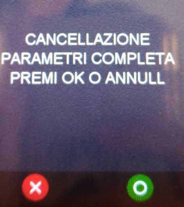

Manuale Installatore
Ingenico Move 5000 SOLO 3G/4G
Brendolan MaxiDi
Stato
Utilizzato da
Redatto da RCC
Approvato da D.
VERSIONING
DATA
REVISI
ONE
MODIFICHE APPORTATE
AUTORE
21/05/2021
1
Stesura iniziale
Santoni
15/06/2021
2
Revisione
Santoni
09/06/2023
3
Revisione
Albertini Adriano
INDICE GENERALE
Indice generale
Scopo e campo di applicazione........................................................................................................................4
Accensione e Riavvio........................................................................................................................................5
Accensione.................................................................................................................................................5
Riavvio.......................................................................................................................................................5
SIGNA................................................................................................................................................................6
Disattivazione Signa..................................................................................................................................6
Cancellazione firme...................................................................................................................................6
Attivazione bancaria..........................................................................................................................................7
Parte Pos: configurazione SSA manager....................................................................................................7
inserire APN: m2m.tns.prod1........................................................................................................8
Attivazione manuale da pos.......................................................................................................................9
Reset Pos...........................................................................................................................................................9
Reset totale.................................................................................................................................................9
Sul pos move 5000 è possibile resettare i termid e i parametri di configurazione dell’ssa oppure
solamente i termid..........................................................................................................................9
Per riconfigurare e attivare il pos vedere capitolo 5....................................................................10
Reset bancario..........................................................................................................................................10
Configurazione BPE.........................................................................................................................................11
Configurazione Amoney BPE..................................................................................................................11
Attivazione Pagamenti Advanced............................................................................................................12
Release............................................................................................................................................................12
Release CB2.............................................................................................................................................12
1. Scopo e campo di applicazione
Questo documento descrive le modalità di utilizzo e configurazione del pos Ingenico Move 5000 3G / 4G
solo GPRS per i PV Brendolan - Maxidi
2. Accensione e Riavvio
2.1.
Accensione
Accensione : collegare l'alimentatore del pos. Il pos si troverà nella schermata di idle dopo circa 90
secondi.
2.2.
Riavvio
Riavvio: premere contemporaneamente il tasto giallo e il tasto punto.
1.
3. SIGNA
Il pos Ingenico Lane 3000 permette di apporre la firma del pagamento direttamente a display del pos. La
firma va poi inviata al server SIGNA, per questo, una volta eseguita l’attivazione, va configurato il menù
SIGNA.
Per i punti vendita Brendolan – MaxiDi il servizio SIGNA VA DISATTIVATO
Disattivazione Signa
Per accedere al menù SIGNA e procedere con la configurazione:
1.
premere tasto F (sopra il tasto rosso)
2.
selezionare SIGNA - psw 7446;
3. per la configurazione:
- selezionare MENU SIGNA
- selezionare PARAM. FIRMA
- selezionare NO
Cancellazione firme
1.
premere tasto F (sopra il tasto rosso)
2.
selezionare SIGNA - psw 7446;
3. selezionare MENU SIGNA
4. selezionare RESET FILE FIRME – PW 62883607423116
5. conferma RESET – tasto verde
4. Attivazione bancaria.
4.1.
Parte Pos: configurazione SSA manager

Per accedere al menù SSA manager e procedere con la
configurazione per l’attivazione:
- 1.
- premere tasto F/GRIGIO
- selezionare SSA MANAGER
- selezionare CONFIGURAZIONE – psw 2010.
Nel menù configurazione si trovano 7 voci, queste verranno
descritte dettagliatamente nei punti 3-11 dell’elenco
sottostante;
4.
selezionare Config server rupp:
• Slot → selezionare lo slot interessato: Argentea per lo scambio importo seriale, Argentea ETH per
lo scambio importo tramite tcp/ip (maggiori dettagli nel capitolo 4);
• Merchant server: compare ARG-!-NTSV.AMON Premere tasto verde per confermare;
• RUPP: inserire il rupp assegnato, per la lettera iniziale utilizzare la tastiera visualizzata a video, per i
valori numerici utilizzare la tastiera numerica del pos. Premere tasto verde per continuare.
• Quando il pos ritorna in slot, premere tasto rosso, dopo di che, verrà richiesto se si desidera
salvare le modifiche, premere tasto verde per confermare.
5.
Selezionare SSA Principale:
- selezionare Tipo Linea: scegliere GPRS e confermare con tasto verde;
- selezionare Tipo Protocollo: scegliere TCP/IP e Confermare con tasto verde;
- inserire indirizzo IP: 208.224.253.5 i valori vanno inseriti dal tastierino del pos. Confermare con
- tasto verde;
- inserire Porta: 4417 i valori vanno inseriti dal tastierino del pos. Confermare con tasto verde;
- inserire Timeout socket: Confermare con tasto verde;
- inserire Timeout Ricezione: Confermare con tasto verde;
- il pos ritornerà in tipo linea, premere tasto rosso, dopo di che verrà richiesto se si vogliono salvare
- le modifiche. Confermare con tasto verde.
6.
Selezionare SSA Backup:
- selezionare Tipo Linea: scegliere GPRS e Confermare con tasto verde;
- selezionare Tipo Protocollo: scegliere TCP/IP e Confermare con tasto verde;
- inserire indirizzo IP: 208.224.253.5 i valori vanno inseriti dal tastierino del pos. Confermare con
- tasto verde;
- inserire Porta: 41253 i valori vanno inseriti dal tastierino del pos. Confermare con tasto verde;
- inserire Timeout socket: Confermare con tasto verde;
- inserire Timeout Ricezione: Confermare con tasto verde;
- il pos ritornerà in tipo linea, premere tasto rosso, dopo di che verrà richiesto se si vogliono salvare
- le modifiche. Confermare con tasto verde.
7.
Selezionare config. Par sito:
• inserire APN: m2m.tns.prod1
• verrà mostrato a display IP DINAMICO con scelte SI’ o NO.
Selezionare SI , confermare con tasto verde e procedere con la configurazione:
1.
una volta completata la configurazione di config. Par sito viene richiesto automaticamente se si
vuole eseguire l’attivazione. Premere tasto verde per confermare l’attivazione bancaria. Durante
questa procedura vengono scaricati sul pos il/i termid prediposti ad essere caricati sul pos.

2.
La voce INSTALLAZIONE permette di far partire l’attivazione manualmente.
4.2.
Attivazione manuale da pos
Per far partire il primo DLL:
1.
premere Tasto F;
1. selezionare SSA MANAGER – CONFIGURAZIONE (2010)
2.
selezionare INSTALLAZIONE e confermare con tasto verde (premere le frecce in basso a destra sul
pos per scorrere le varie opzioni della tabella)
5. Reset Pos
5.1.
Reset totale
1.Sul pos move 5000 è possibile resettare i termid e i parametri di configurazione dell’ssa oppure
solamente i termid.
Per resettare completamente il pos:
- premere TASTO F
- selezionare SSA MANAGER – CONFIGURAZIONE (2010)
- selezionare RESET PARAMETRI
• a display verrà richiesto di eseguire il reset completo: se si seleziona OK-tasto verde verrà eseguita
una cancellazione completa, cioè verranno eliminati sia i termid presenti a bordo sul pos che i
parametri di configurazione dell’ssa manager.

2.Per riconfigurare e attivare il pos vedere capitolo 5.
5.2.
Reset bancario
Per resettare solamente i termid e non i parametri di configurazione:
- premere TASTO F
- selezionare SSA MANAGER – CONFIGURAZIONE (2010)
- selezionare RESET PARAMETRI
• Se alla richiesta di cancellazione parametri completa si preme tasto rosso il pos chiederà di
eseguire la cancellazione bancaria. A questo punto premendo tasto verde viene eseguita un reset
parziale e cioè verranno eliminati solamente i termid presenti sul pos, mentre verranno lasciati
invariati i parametri di configurazione.

6. Configurazione BPE
6.1.
Configurazione Amoney BPE
Per accedere al menù AMoney BPE e procedere con la configurazione per l’attivazione:
- 1.
- premere tasto F/GRIGIO
- selezionare AMONEYBPE
- selezionare CONFIGURAZIONE – psw 72619
- RUPP: inserire il RUPP corrispondente (per cancellare modificare tasto giallo). Premere
- il tasto verde per salvare
- Tipo Connessione: GPRS tasto verde per salvare e passare alla voce successiva
- Protocollo di rete: TCP/IP tasto verde per salvare e passare alla voce successiva
- APN: m2m.tns.prod1
- Conn Principale:
IP server BP: 208.224.253.5 tasto verde per salvare e passare alla voce
successiva
Port server BP: 34060 tasto verde per salvare e passare alla voce successiva
• Conn Bakcup:
IP server BP: 208.224.253.5 tasto verde per salvare e passare alla voce
successiva
Port server BP: 34060 tasto verde per salvare e passare alla voce successiva
- Timeout: 120 tasto verde per salvare e passare alla voce successiva
- Eccedi Importo off tasto verde per salvare e passare alla voce successiva
- Standalone: ON tasto verde per salvare e passare alla voce successiva
- Porta SSA: 4417 tasto verde per salvare e passare alla voce successiva
premere tasto rosso per uscire applicazione
NB: Da schermata principale potete utilizzare lo shortcut “tasto rosso” per accedere in modo diretto alla
funzione di “pagamento BPE”
6.2.
Attivazione Pagamenti Advanced
Per accedere al menù AMoney BPE e procedere con la attivazione dei Pagamenti Advanced:
assicurarsi che la configurazione AmoneBPE sia stata eseguita, in caso vedere istruzioni paragragfo
precedente 6.1 Configurazione Amoney BPE
- 4.
- premere tasto F/GRIGIO
- selezionare AMONEYBPE
- selezionare Pagamenti ADV
- selezionare Inizializzazione → confermare con tasto verde
- se tutto OK ed è disponibile un servizion Advanced, come Satispay, viene ritornato uno
scontrino con il servizio abilitato
Una volta completata la procedura di “inizializzazione” si può procedere ad eseguire un pagamento o una
delle altre operazioni disponibili.
NB: Da schermata principale potete utilizzare lo shortcut “tasto giallo” per accedere in modo diretto alla
funzione di “pagamento advanced” disponibile
7. Release
7.1.
Release CB2
Per visualizzare la release CB2:
- premere tasto F1;
- selezionare SERVIZIO;
- selezionare RELEASE SW: la seconda linea mostra la release CB2 che è caricata a bordo del pos.
◦ LA VERSIONE ATTUALE AGGIORNATA è
- CB2 32.40Ap
- ECR_MANAGER: 44.27